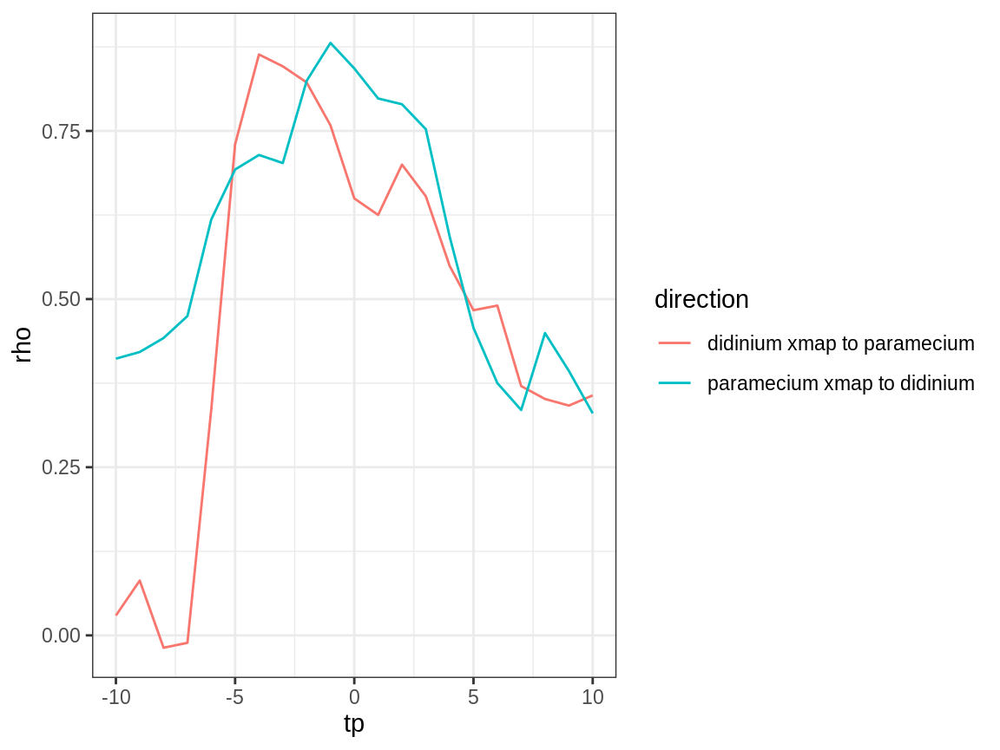

vignettes/rEDM-time-delay-ccm.Rmd
rEDM-time-delay-ccm.RmdBy default, convergent cross mapping (via the ccm function) tries to map between a lagged-coordinate vector from a “library” variable, \(x\), and the simultaneous value of a target variable, \(y\): \[ y_{t+tp} = F\left(\vec{x}_t\right) = F\left(\langle x_t, x_{t-\tau}, \dots, x_{t-(E-1)\tau} \rangle \right) \] where \(tp = 0\).
However, note that tp is also an argument to ccm, and will accept both positive and negative values. This allows us to identify the ability to infer \(F\) from the data at different values of tp, which is, to a first approximation, the time delay by which information about \(y\) is encoded in the time series of \(x\).
Note here that negative values of tp (\(tp < 0\)) indicate that past values of \(y\) are best cross mapped from the reconstructed state of \(\vec{x}\). This suggests a dynamical signal that appears first in \(y\) and later in \(x\), and is consistent with \(y\) causing \(x\).
If there is no causation in the reverse direction (i.e. \(x\) does not cause \(y\)), then we would expect that CCM in the opposite direction: \[ x_{t+tp} = G\left(\vec{y}_t\right) = G\left(\langle y_t, y_{t-\tau}, \dots, y_{t-(E-1)\tau} \rangle \right) \] would be best at a positive values of tp (\(tp > 0\)).
This presumes that the time series are sampled frequently enough relative to the causation that a time delay can be detected. If causation is synchronous or nearly so, then we may find the optimal value of tp to be \(0\) in both directions.
We can determine the optimal values of tp by testing different values within the ccm function. Conventionally, we do this with as much of the data as possible, to obtain the cleanest signal.
First, we grab some demo time series from the block_3sp data.frame:
Setup the cross mapping runs we want to do:
vars <- names(paramecium_didinium)[2:3] # c("paramecium", "didinium")
# generate all combinations of lib_column, target_column, tp
params <- expand.grid(lib_column = vars,
target_column = vars,
tp = -10:10)
# throw out cases where lib == target
params <- params[params$lib_column != params$target_column, ]
# E = 3 is optimal or very close to optimal for both vars
# In other circumstances, we should use the best univariate E for each lib_column
E <- 3Perform cross mapping runs:
Create an additional column to describe the direction of the cross mapping:
Plot the results (cross map skill vs. tp):

As expected for this simple predator-prey system, we see evidence for causation in both directions (cross map skill, rho, peaks for negative tp).
The strength of the interaction looks approximately equal (as inferred from cross map skill) – though this inference has a weak assumption that all else is equal, including observational error; these assumptions are reasonable for this laboratory experiment.
We further note that the estimated time delay for the effect of predators (didinium) on prey (paramecium) is fast (\(tp\) is close to 0 for “paramecium xmap to didinium”) compared to the effect of prey on predators (\(tp\) is more negative for “didinium xmap to paramecium”). This is consistent with the ecological interpretation that changes in predator abundance affect prey abundance quickly, while there is a slower response of predator abundance to changes in prey abundance.